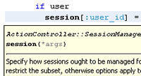
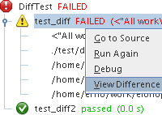
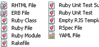
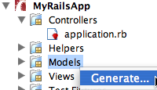
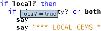
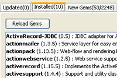

イメージをクリックして全画面表示
注意: NetBeans IDE 7.0の時点で、RubyおよびRuby on Railsのサポートは標準のNetBeans IDEビルドでは使用できなくなりました。詳細は、RubyサポートWikiページを参照してください。
Rubyソース・コード・エディタエディタでは、構文と意味構文に従ってRubyのコードのインデント、補完、および強調表示が可能です。これは、名前変更リファクタリング、型推論、およびナビゲーションによる支援を行います。エディタでは、コードはリアル・タイムで構文解釈され、語や括弧の対応付け、エラーや発生箇所のマーク、新しい簡易修正やRDocの表示が行われます。少ないキー・ストロークで、頻繁に使用するコード・スニペットをライブ・テンプレートから挿入できます。 |
 |
RubyプロジェクトRubyプロジェクト・タイプは、Rubyファイル、RSpec仕様ファイル、およびYAMLファイルをサポートします。Rubyプラットフォーム・マネージャを使用すると、プロジェクト実行時にJRuby、またはシステム上の他のネイティブRubyインタプリタのどちらを使用するかを選択できます。 IDEはRakeビルド・ツールとの統合を実現し、Interactive Ruby Shell (IRB)にアクセスできるようにします。リファクタリングとTest::Unit、自動テスト、Shouldaテスト、およびRSpecのサポートが統合されています。タスクの一覧でヒントとエラーをトラックすることもできます。
Ruby on RailsプロジェクトRuby on Railsプロジェクト・タイプは、Rakeターゲットとデータベース・マイグレーションをサポートします。「Rakeタスクを実行/デバッグ」ダイアログに、以前入力したパラメータのリストが表示され、マイグレーションおよびフィクスチャ・タスクのパラメータのリストが自動的に生成されます。Rails 3プロジェクトを生成するか、Railsコード・ジェネレータのグラフィカルなウィザードでコードを生成できます。プロジェクトの論理ビューでは、コントローラがモデル、ビュー、およびデータベース・マイグレーションから明確に分離されています。 ERBファイルを編集し、WEBrickやMongrelのWebサーバーにプロジェクトを直接デプロイできます。Railsのアクションと対応するビューの間を簡単に移動できます。また、編集中のファイルとの関連性が最も高いURLをブラウザに表示できます。 Ruby and RailsデバッガRubyコードやERBファイルをステップ実行するか、通して実行できます。ブレークポイントを設定したり、ローカル変数を確認したり、コール・スタックをナビゲートしたり、スレッドを切り替えたりできます。エディタ内で変数の上にマウス・ポインタを置くと、式を評価してツールチップに表示します。NetBeans IDEは、高速Rubyデバッガをサポートしています。これはJRubyでも操作できます。NetBeansプロジェクトに含まれないRubyファイルをデバッグしたり、コマンド行から開始された任意のリモート・プロセスにデバッガをアタッチしたりでき、使いやすいデバッガ・フロント・エンドの利点をすべて活用できます。 |
    |
Ruby Gemsインストール・マネージャ統合されているRuby Gemsパッケージ化システムを使用して、Rubyのインストールを拡張できます。Gemsインストール・マネージャを使用して$GEM_PATHまたは$GEM_HOMEを構成できます。自由に入手可能なRubyソフトウェア・ライブラリを追加して管理したり、独自のパッケージを配布したりできます。Gemマネージャでは、特定のバージョンのgemをアンインストールすることもできます。 Bundler gemをインストールすると、プロジェクトのコンテキスト・メニューからBundlerアクションを実行できます。
|
 |